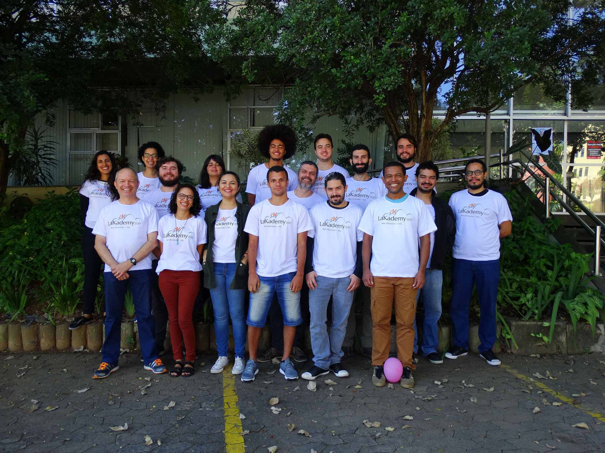

O LaKademy 2017 será uma edição muito especial, o evento completará 5 anos. Nesta 5ª edição temos o orgulho de anunciar que o nosso encontro latino-americano será realizado na cidade de Belo Horizonte, Minas Gerais, Brasil.
Entre os dias 28/04 e 01/05 vários contribuidores da nossa comunidade se reunirão para trabalhar nos seus projetos de interesse. O evento, no entanto, não aberto apenas para os contribuidores, mas para usuários e quaisquer outras pessoas interessadas em fazer parte dele. Então, se você é uma dessas pessoas que tem interesse em participar do LaKademy e da comunidade KDE, apareça no Campus 1 do CEFET/MG.
